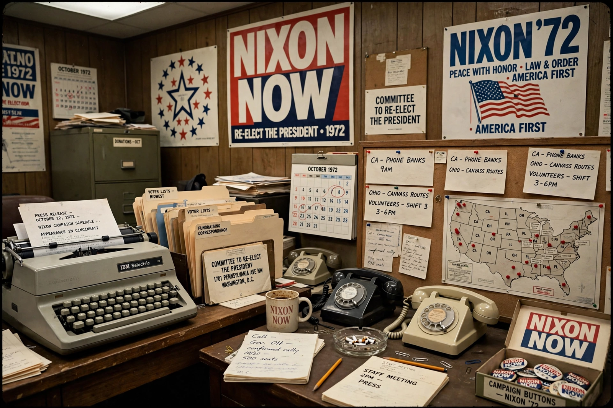

| Committee to Re-elect the President | |
| Abbreviation | CRP; derisively "CREEP" |
|---|---|
| Formation | 1971 |
| Purpose | Re-election campaign organisation for President Richard Nixon, 1972 |
| Director | John N. Mitchell (to 1 July 1972); Clark MacGregor thereafter |
| Finance chairman | Maurice Stans |
| Key people | Jeb Stuart Magruder (deputy director); G. Gordon Liddy (general counsel) |

The Committee to Re-elect the President (officially abbreviated CRP, later widely mocked as CREEP) was the fundraising and campaign organisation for the re-election of U.S. President Richard Nixon in the 1972 presidential election. It became notorious for its central role in the Watergate scandal.
Formed in 1971, the committee was run day-to-day by deputy director Jeb Magruder under campaign director John Mitchell, Nixon's former Attorney General; Mitchell resigned on 1 July 1972, two weeks after the Watergate arrests, and was succeeded by Clark MacGregor. Finance chairman Maurice Stans raised very large sums — much of it before a new disclosure law took effect in April 1972, which allowed donors to remain anonymous — including cash contributions that were later channelled to covert operations.
CRP general counsel G. Gordon Liddy presented ambitious "Gemstone" plans for political espionage to Mitchell and others, and directed a team that broke into the Democratic National Committee headquarters in the Watergate complex — first in May 1972 to install wiretaps, and again on 17 June 1972, when five men were arrested. Money found on the burglars was traced to CRP through a cheque from a committee donor deposited in burglar Bernard Barker's account, a crucial early link uncovered by investigators and reporters.
Mitchell, Magruder, Liddy and others were eventually convicted of Watergate-related crimes. The scandal also transformed American campaign-finance law, leading to the Federal Election Campaign Act amendments of 1974.